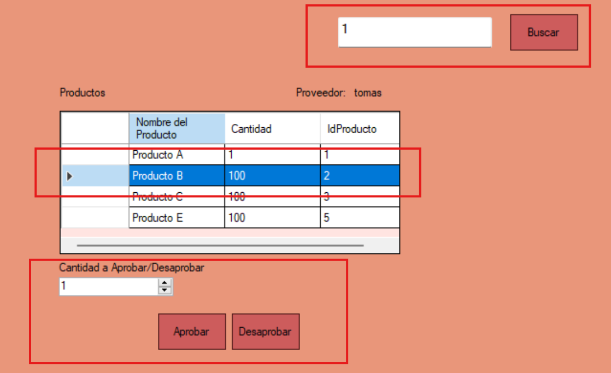

Ayuda: Reponer Stock
La pantalla de Reponer Stock permite al usuario gestionar el ingreso de nuevos productos.
Guia paso a paso
Siga estos pasos para reponer el stock:
- Ingrese una orden de compra.
- Haga click en "Buscar".
- Seleccione el producto a evaluar.
- Ingrese la cantidad aprobada o desaprobada (el resto se desaprobara o aprobara).
- Haga click en "Finalizar".

Notas adicionales
Recuerde que solo los usuarios con permisos adecuados pueden gestionar algunas acciones.